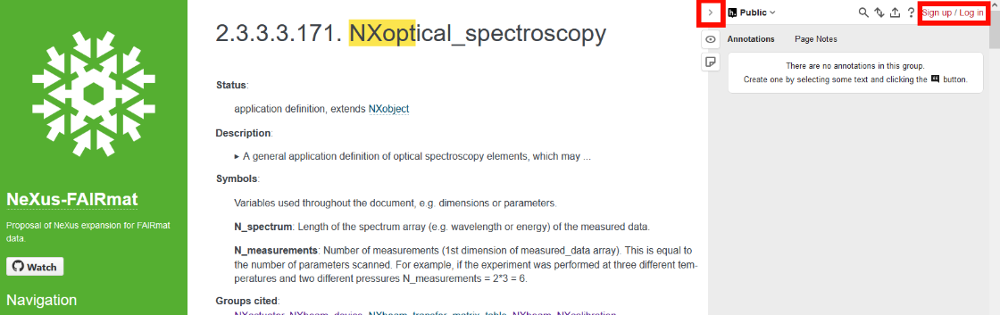
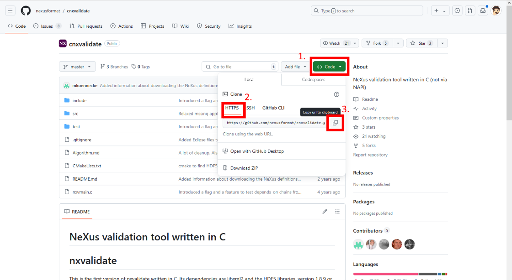

Validating NeXus files¶
Note: This is a how-to guide for using different tools to validate NeXus files. If you want to learn more about how validation is done in pynxtools, please visit the explanation page.
The goal
Use a tool to validate NeXus files to a given set of NeXus definitions:
Validation of a .nxs file¶
The validity of NeXus files is fundamental to ensure FAIR data. Without specific requirements, it is not possible to understand the data. What type of experiment? What Laser Wavelength? Which voltage? What data is represented at all in the table? What is the unit of the value? Which ISO norm does this refer to? Where was this measured? Which year was this measured?
The NeXus application definitions define the minimum set of terms that must be used in an instance of that class (i.e., the required terms that you must add to the file in order to be compliant with that application definition). Application definitions also may define terms that are optional in the NeXus data file. The requirements are set by the community via workshops or at conferences. To initiate or propose changes/additions, you can comment the FAIRMat NeXus proposal by going to the NeXus definitions, and using the hypothes.is tool (sign-up/log-in) to give us some feedback (Red boxes in the image. Expand this panel on the left by clicking on the arrow symbol).

Oftentimes, there will be errors in a generated NeXus file (be it by hand or automatically): Typos, missing required concepts, missing attributes, using the incorrect datatype or format (e.g., array instad of list, float instead of integer, etc.). Therefore, a validation is required, to ensure that the data you want to share is FAIR.
The NeXus file is valid if it complies with the respective NeXus application definition.
This validation is done by software.
Validation software¶
There are right now three tools, which can be used for validation of NeXus files. All are different and have individual advantages or disadvantages:
-
pynxtools
-
cnxvalidate
-
punx
Open software is usually shared on Github - There you find usually the most accurate information, as documentation sometimes lags behind. There you see a box with folders and files. Below is the content of the README.md file displayed. This usually shows instructions for installation and handling of the software.
Here are the GitHub links for the three software packages:
In the following, each package and its capabilities is presented.
Operating systems¶
Almost all PC users are used to Windows as operating system.
A lot of software development is done on Linux as operating system.
This is not a problem for big companies, but for smaller open software projects, which are often developed without funding, this is a problem.
If you are used to Windows, consider setting up a Linux operating system to eliminate problems in the installation process and ensure compatibility.
pynxtools¶
pynxtools = Python Nexus Tools
> learn more about validation in pynxtools <
This is a python package which is developed by the FAIRmat consortium.
As a python package, this can be used on Linux and Windows systems.
The package can be installed via pip. Therefore you need to have installed:
-
python
-
pip
For validation purposes, we will use the "read_nexus" and "verify_nexus" command line tools from pynxtools.
pynxtools - verify_nexus¶
This tool is currently in development. It enables a command like:
The output warning looks like this:
...
WARNING: Field /entry/instrument/beam_incident/wavelength/@units written without documentation.
...
Installation of verify_nexus¶
The verify_nexus function is currently under development (Aug 2024). Therefore, you have to install pynxtools from its feature branch until this function is published.
Do this to install pynxtools with verify_nexus via;
Then, you should be able to call its help function:
with this output:
Usage: verify_nexus [OPTIONS] FILE
Verifies a nexus file
Options:
--help Show this message and exit.
Development version installation
If this installation procedure above does not work, you can use the development installation by using git:
python -m venv .py39
source .py39/bin/activate
git clone https://github.com/FAIRmat-NFDI/pynxtools.git
cd pynxtools/
git checkout hdf-based-validation
git submodule sync –recursive
git submodule update --init --recursive --jobs=4
python -m pip install --upgrade pip
python -m pip install -e .
python -m pip install -e ".[dev]“
verify_nexus --help
Using verify_nexus¶
Open your terminal. Assuming there is a folder at:
For Linux:
For Windows:
Put into this folder your NeXus file, for example this Raman.nxs file.
Use verify_nexus with the command:
The respective output is:
WARNING: Field /entry/data/spectrum_data_x/@units written without documentation.
WARNING: Field /entry/data/spectrum_data_x_Raman/@units written without documentation.
WARNING: Field /entry/data/spectrum_data_y/@units written without documentation.
WARNING: Field /entry/instrument/beam_incident/wavelength/@units written without documentation.
WARNING: Field /entry/instrument/detector_DU970BV/number_of_cycles/@units written without documentation.
Invalid: The entry `entry` in file `Raman.nxs` is NOT a valid file according to the `NXraman` application definition.
pynxtools - read_nexus¶
While verify_nexus´ is used as a straightforward tool for validating a NeXus file,read_nexus` outputs a debug log for a given NeXus file by annotating the data and metadata entries with the schema definitions from the respective NeXus base classes and application definitions to which the file refers to. This can be helpful to extract documentation and understand the concept defined in the NeXus application definition.
The command used is:
The output looks like this, if the respective entry is found:
DEBUG: ===== FIELD (//entry/experiment_type): <HDF5 dataset "experiment_type": shape (), type "|O">
DEBUG: value: b'transmission spectroscopy'
DEBUG: classpath: ['NXentry', 'NX_CHAR']
DEBUG: classes:
NXoptical_spectroscopy.nxdl.xml:/ENTRY/experiment_type
DEBUG: <<REQUIRED>>
DEBUG: enumeration (NXoptical_spectroscopy.nxdl.xml:/ENTRY/experiment_type):
DEBUG: -> photoluminescence
DEBUG: -> transmission spectroscopy
DEBUG: -> reflection spectroscopy
DEBUG: -> other
DEBUG: documentation (NXoptical_spectroscopy.nxdl.xml:/ENTRY/experiment_type):
DEBUG:
Specify the type of the optical experiment.
Chose other if none of these methods are suitable. You may specify
fundamental characteristics or properties in the experimental sub-type.
For Raman spectroscopy or ellipsometry use the respective specializations
of NXoptical_spectroscopy.
or like this, if the respective entry is not found in the defintion:
DEBUG: ===== ATTRS (//entry/instrument/software_RC2/program@url)
DEBUG: value: https://www.jawoollam.com/ellipsometry-software/completeease
DEBUG: classpath: ['NXentry', 'NXinstrument']
DEBUG: NOT IN SCHEMA
DEBUG:
The first example was for for "experiment_type" entry in the "NXoptical_spectroscopy" definition.
The second example was for the "software_TYPE" attribute @URL entry in the "NXoptical_spectroscopy" definition. Here the problem was that "url" was used instead of "URL".
Installation of read_nexus¶
This is installed with pip:
Using read_nexus¶
Open your terminal. Assuming there is a folder at:
For Linux:
For Windows:
Put into this folder your NeXus file, for example the Raman.nxs file.
Then use:
shows the output like this:
===== FIELD (//entry/data/spectrum_data_y): <HDF5 dataset "spectrum_data_y": shape (1600,), type "<f8">
DEBUG: ===== FIELD (//entry/data/spectrum_data_y): <HDF5 dataset "spectrum_data_y": shape (1600,), type "<f8">
value: [ 288.5499878 289. 288.4500122 ... 1875. 1889.349976 ...
DEBUG: value: [ 288.5499878 289. 288.4500122 ... 1875. 1889.349976 ...
Dataset referenced as NXdata SIGNAL
DEBUG: Dataset referenced as NXdata SIGNAL
===== ATTRS (//entry/data/spectrum_data_y@long_name)
DEBUG: ===== ATTRS (//entry/data/spectrum_data_y@long_name)
value: Raman Intensity
DEBUG: value: Raman Intensity
Dataset referenced as NXdata SIGNAL
DEBUG: Dataset referenced as NXdata SIGNAL
===== ATTRS (//entry/data/spectrum_data_y@units)
DEBUG: ===== ATTRS (//entry/data/spectrum_data_y@units)
value: counts
DEBUG: value: counts
DEBUG:
For Axis #0, 1 axes have been identified: [<HDF5 dataset "spectrum_data_x_Raman": shape (1600,), type "<f8">]
DEBUG: For Axis #0, 1 axes have been identified: [<HDF5 dataset "spectrum_data_x_Raman": shape (1600,), type "<f8">]
Search for fields which are not found in the NeXus definition by searching for the line: "DEBUG: NOT IN SCHEMA". Recheck the used NeXus definition to eliminate the problem. Be careful with upper and lower case notation and correct spelling.
Keep in mind that the output provides quite some information. This is useful for software development, but may be a bit too much for validation purposes.
cnxvalidate¶
This package is written in C. It is allows a command line evocation like:
-
nxvalidate: calls the software function
-
-l appdefdir: points to the location of the NeXus definitions you want to use. This is a path to a folder called "defintions".
-
datafile: This is the path to the .nxs file which should be checked.
This output shows warnings like:
definition=NXoptical_spectroscopy.nxdl.xml message="Required attribute URL missing" nxdlPath=/NXentry/definition sev=error dataPath=/entry/definition dataFile=NXopt_minimal_example.nxs
and indicates the entry of the .nxs file, which is incorrect and what the respective problem is. It also points to the NeXus definition (.nxdl.xml file), in which this conflict was found.
Installation¶
Note: You can find more information about installing nxvalidate here. Note that installation on Windows can be tricky because cmake can sometimes not find the libxml2 library. Though, if you solve this, this maybe work on windows).
Therefore: Use linux.
The software has to be built from source. This is eased significantly by using another software called: cmake.
Install cmake, github, hdf5 & xml2 library, etc:
Open the terminal and install all parts required to install cnxvalidate via cmake:
sudo apt-get update
sudo apt-get install git
sudo apt-get install build-essential
sudo add-apt-repository universe
sudo apt-get install libhdf5-serial-dev
sudo apt-get -y install pkg-config
sudo apt upgrade -y
sudo apt-get -y install cmake
sudo apt-get install libxml2-dev
Directory location
Create a folder named "nexusvalidation" via terminal or file manager.
The folder is located at /home/USER/nexusvalidation
"USER" is your user name. (You can get your username by the terminal command: echo $USER)
In the terminal, this is indicated by ~/nexusvalidation ( \~ = /home/USER)
Open the thermal and go into this directory by:
Using GitHub
Go to the Github Repository of cnxvalidate:
Click on the green "<> Code" button.
Click on "HTTPS".
Copy the https link.

Open the terminal and ensure you are in the nexusvalidation folder.
Clone the github repository (= download the files of the software).
now you have a new folder at ~/nexusvalidation/cnxvalidate
go into this folder via the command
now you are in the source tree. This should be exactly the same files, which you find on the github repository github repository
make a new directory called "build":
go into this directory
use cmake, to compile/build the software - this puts together all pieces of software - and especially external parts such as xml2 and hdf5 library.
install cnxvalidate after it was sucessfully build
Now the above mentioned commands should be avaialble. The programm/executable is located at:
Using cnxvalidate¶
Now you can start to validate your created NeXus file. But before the validation, we need to get a set of NeXus definitions, which we want to use as reference. This is done again by using git:
Getting NeXus definitions
go to the folder nexusvalidation
Download a set of NeXus definitions. Choose only one:
For FAIRmat NeXus definitions, go to this link and copy the github "Code" line to clone the repository. Then:
For the NIAC NeXus definitions, go to this link and copy the github "Code" line to clone the repository. Then:
Now you have a folder called "definitions" in the "nexusvalidation" folder. The path to this definitions folder is used as option for cnxvalidate, to tell the program which NeXus definitions shall be used.
The respective path would be:
Get your NeXus file
put one of created NeXus file (or this this file) into the "nexusvalidation" folder (filemanager/explorer).
The file should now be loacted at (assumed the file name is "NXopt_minimal_example.nxs")
Validating the NeXus file
now you can use the cnxvalidate with the executable called "nxvalidate" to use the set of NeXus definitions called "appdefdir" to validate the NeXus file called "datafile". This is done from the terminal.
All names are "paths" to the definition, application or file. Use the "full path", if you are not experienced, but relative paths work as well.
For the provided example, the suitable command looks like:
/home/USER/nexusvalidation/cnxvalidate/build/nxvalidate -l /home/USER/nexusvalidation/definitions /home/USER/nexusvalidation/NXopt_minimal_example.nxs
The "-l" option tells the program, that it should look for the nexus definiton at the path after "-l".
For the proved file above, the output should look like this:
USER@XXX:/home/USER/nexusvalidation/cnxvalidate/build/nxvalidate -l /home/USER/nexusvalidation/definitions /home/USER/nexusvalidation/NXopt_minimal_example.nxs
definition=NXoptical_spectroscopy.nxdl.xml message="Required attribute version missing" nxdlPath=/NXentry/definition sev=error dataPath=/entry/definition dataFile=NXopt_minimal_example.nxs
definition=NXoptical_spectroscopy.nxdl.xml message="Required attribute URL missing" nxdlPath=/NXentry/definition sev=error dataPath=/entry/definition dataFile=NXopt_minimal_example.nxs
definition=NXoptical_spectroscopy.nxdl.xml message="Required field missing" nxdlPath=/NXentry/experiment_type sev=error dataPath=/entry/experiment_type dataFile=NXopt_minimal_example.nxs
definition=NXoptical_spectroscopy.nxdl.xml message="Required group missing" nxdlPath=/NXentry/NXinstrument sev=error dataPath=/entry dataFile=NXopt_minimal_example.nxs
definition=NXoptical_spectroscopy.nxdl.xml message="Required group missing" nxdlPath=/NXentry/NXsample sev=error dataPath=/entry dataFile=NXopt_minimal_example.nxs
definition=NXoptical_spectroscopy.nxdl.xml message="Required group missing" nxdlPath=/NXentry/NXdata sev=error dataPath=/entry dataFile=NXopt_minimal_example.nxs
9 errors and 11 warnings found when validating NXopt_minimal_example.nxs
The errors tell you now which things are missing (message="Required group missing"), if there is a field missing (message="Required field missing"), or if an attribute is missing (message="Required attribute URL missing" - here for example the attribute named URL)
Now adjust the file creation, and add the respective fields to make your NeXus file compliant with the NeXus definitions. This way, you can ensure that your data is FAIR, which is then ready for sharing and publication.
punx¶
punx - Python Utilities for NeXus HDF5 files
This is python package, and can therefore be used on Linux and Windows systems.
The package can be installed via pip. Therefore you need to have installed:
-
python
-
pip
You can then evoke a command like this:
"validate" tells the program that we want to validate a file
"[-h]" tells the program to show the help message
"[--report REPORT]" tells the program what findings should be reported.
This is done by replacing REPORT with ={COMMENT,ERROR,NOTE,OK,TODO,UNUSED,WARN}
Installation¶
Open the terminal and install punx via pip:
This software is based on other powerful software packages or libraries, therefore as well other packages have to be installed:
pip install h5py
pip install lxml
pip install numpy
pip install PyQt5
pip install requests
pip install pyRestTable
Then you should be able to test the package by:
The output should look like this:
C:\>punx demo
!!! WARNING: this program is not ready for distribution.
console> punx validate C:\Users\USER\AppData\Local\Packages\PythonSoftwareFoundation.Python.3.10_qbz5n2kfra8p0\LocalCache\local-packages\Python310\site-packages\punx\data\writer_1_3.hdf5
data file: C:\Users\USER\AppData\Local\Packages\PythonSoftwareFoundation.Python.3.10_qbz5n2kfra8p0\LocalCache\local-packages\Python310\site-packages\punx\data\writer_1_3.hdf5
NeXus definitions: main, dated 2024-01-02 03:04:05, sha=xxxx21fxcef02xfbaa6x04e182e3d67dace7ef1b
findings
============================ ======== ==================================== ==========================================================
address status test comments
============================ ======== ==================================== ==========================================================
/ TODO NeXus base class NXroot: more validations needed
/ OK known NXDL NXroot: recognized NXDL specification
/ OK NeXus base class NXroot: known NeXus base class
/ OK NeXus default plot found by v3: /Scan/data/counts
/ OPTIONAL NXDL group in data file not found: in //entry
/Scan TODO NeXus base class NXentry: more validations needed
/Scan OK group in base class not defined: NXroot/Scan
/Scan OK known NXDL NXentry: recognized NXDL specification
/Scan OK NeXus base class NXentry: known NeXus base class
/Scan OK NXDL group in data file found: in /Scan/data
/Scan NOTE validItemName relaxed pattern: [a-zA-Z0-9_]([a-zA-Z0-9_.]*[a-zA-Z0-9_])?
/Scan OPTIONAL NXDL field in data file not found: /Scan/collection_description
/Scan OPTIONAL NXDL field in data file not found: /Scan/collection_identifier
/Scan OPTIONAL NXDL field in data file not found: /Scan/collection_time
/Scan OPTIONAL NXDL field in data file not found: /Scan/definition
/Scan OPTIONAL NXDL field in data file not found: /Scan/definition_local
...
...
...
/Scan/data@signal OK known attribute known: NXdata@signal
/Scan/data@signal OK value of @signal found: /Scan/data/counts
/Scan/data@signal OK NeXus default plot v3, NXdata@signal correct default plot setup in /NXentry/NXdata
/Scan/data@two_theta_indices TODO attribute value implement
/Scan/data@two_theta_indices OK validItemName strict pattern: [a-z_][a-z0-9_]*
/Scan/data@two_theta_indices OK known attribute unknown: NXdata@two_theta_indices
/Scan/data/counts OK validItemName strict pattern: [a-z_][a-z0-9_]*
/Scan/data/counts OK field in base class not defined: NXdata/counts
/Scan/data/counts@units TODO attribute value implement
/Scan/data/counts@units OK validItemName strict pattern: [a-z_][a-z0-9_]*
/Scan/data/two_theta OK validItemName strict pattern: [a-z_][a-z0-9_]*
/Scan/data/two_theta OK field in base class not defined: NXdata/two_theta
/Scan/data/two_theta@units TODO attribute value implement
/Scan/data/two_theta@units OK validItemName strict pattern: [a-z_][a-z0-9_]*
============================ ======== ==================================== ==========================================================
summary statistics
======== ===== =========================================================== =========
status count description (value)
======== ===== =========================================================== =========
OK 35 meets NeXus specification 100
NOTE 1 does not meet NeXus specification, but acceptable 75
WARN 0 does not meet NeXus specification, not generally acceptable 25
ERROR 0 violates NeXus specification -10000000
TODO 7 validation not implemented yet 0
UNUSED 0 optional NeXus item not used in data file 0
COMMENT 0 comment from the punx source code 0
OPTIONAL 40 allowed by NeXus specification, not identified 99
--
TOTAL 83
======== ===== =========================================================== =========
<finding>=99.144737 of 76 items reviewed
NeXus definitions version: main
console> punx tree C:\Users\rh83hixu\AppData\Local\Packages\PythonSoftwareFoundation.Python.3.10_qbz5n2kfra8p0\LocalCache\local-packages\Python310\site-packages\punx\data\writer_1_3.hdf5
C:\Users\rh83hixu\AppData\Local\Packages\PythonSoftwareFoundation.Python.3.10_qbz5n2kfra8p0\LocalCache\local-packages\Python310\site-packages\punx\data\writer_1_3.hdf5 : NeXus data file
Scan:NXentry
@NX_class = "NXentry"
data:NXdata
@NX_class = "NXdata"
@axes = "two_theta"
@signal = "counts"
@two_theta_indices = [0]
counts:NX_INT32[31] = [1037, 1318, 1704, '...', 1321]
@units = "counts"
two_theta:NX_FLOAT64[31] = [17.92608, 17.92591, 17.92575, '...', 17.92108]
@units = "degrees"
Then you should be able to use this package.
Official docs for punx installation
Using punx¶
Open your terminal. Assuming there is a folder at:
For Linux:
For Windows:
Put a NeXus file into this folder. For example, the file: SiO2onSi.ellips.nxs.
then the command is (for Windows):
For Linux:
The output tables "findings" and "summary statistics" can be used to find error present in the NeXus file.
Which NeXus definition?
The program selects the NeXus definitions (set of nxdl.xml files) by itself. It can in principle also be modified with different repositories. The functionality to add a new repository is right now not possible (Aug 2024).
Therefore, only the NIAC repository as NeXus definitions is functional.
You may update the repository for the lastest version via:
The NeXus respective definitions are found here:
Search on the right side under "quick search" for "NXopt":
This python code creates the respective python file with all required fields:
NXopt_minimal_example_NIAC_NeXus_Def.nxs
Here is the python code:
h5py_nexus_file_creation_NIAC_NeXus_Def.py
The command:
then gives this output:
findings
======= ====== ========== ======================================
address status test comments
======= ====== ========== ======================================
/entry ERROR known NXDL NXopt: unrecognized NXDL specification
======= ====== ========== ======================================
summary statistics
======== ===== =========================================================== =========
status count description (value)
======== ===== =========================================================== =========
OK 148 meets NeXus specification 100
NOTE 0 does not meet NeXus specification, but acceptable 75
WARN 0 does not meet NeXus specification, not generally acceptable 25
ERROR 1 violates NeXus specification -10000000
TODO 16 validation not implemented yet 0
UNUSED 0 optional NeXus item not used in data file 0
COMMENT 0 comment from the punx source code 0
OPTIONAL 213 allowed by NeXus specification, not identified 99
--
TOTAL 378
======== ===== =========================================================== =========
The last error message:
======= ====== ========== ======================================
/entry ERROR known NXDL NXopt: unrecognized NXDL specification
======= ====== ========== ======================================
can be ignored and is a bug right now. If this is the only Error message, then your NeXus file is compliant with the NeXus definitions and you can share and publish your data.
Further notes¶
-
Punx only uses the NeXus definiton from the NIAC NeXus definiton from the NIAC. The use of the FAIRmat NeXus definition is not possible right now.
Summary¶
This tutorial showed:
-
3 different tools for NeXus file validation
-
How to install these tools
-
How to use them via Examples
Recommended workflow¶
As pynxtools verify_nexus method is right now in development, not all situations are covered right now. Therefore, the most reliable method right now is a combination of Human Manual Validation + Software solutions.
Pynxtools Parsers¶
For a specifically structured set of data, a parser can be written, which uses the meta data and a pre-structured meta data file, to create a NeXus file. Tough, the parser depends on: Experimental Technique and Setup and has therefore to be written individually. Take a look here.
Feedback and contact¶
-
Best way is to contact the software development team directly via a Github Issue.
-
ron.hildebrandt(at)physik.hu-berlin.de